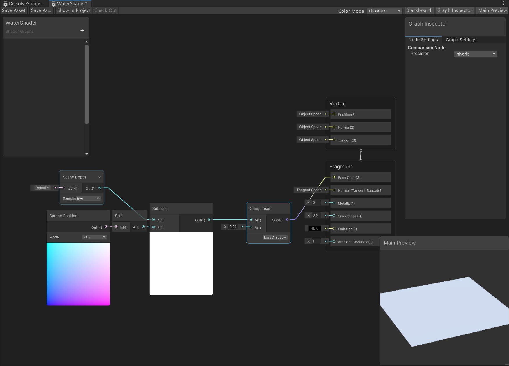
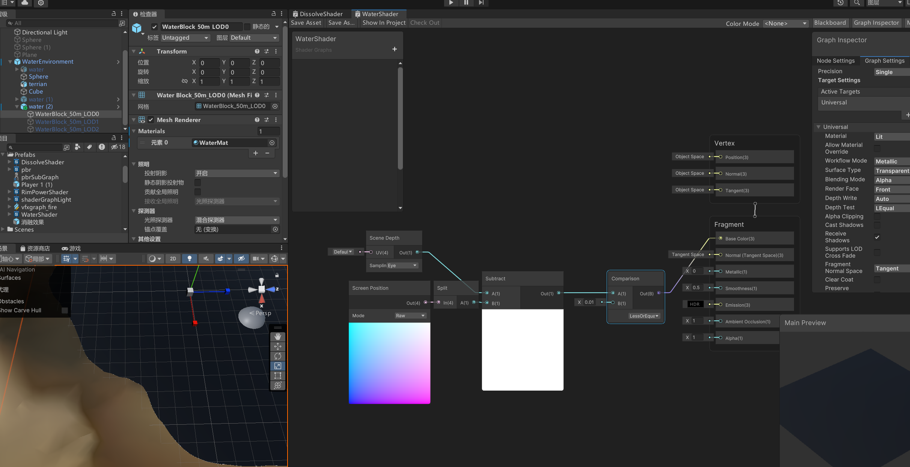
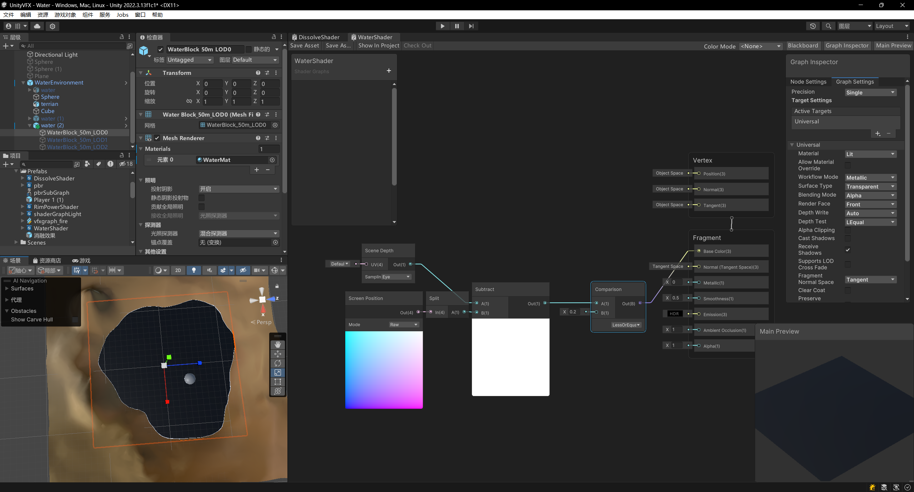
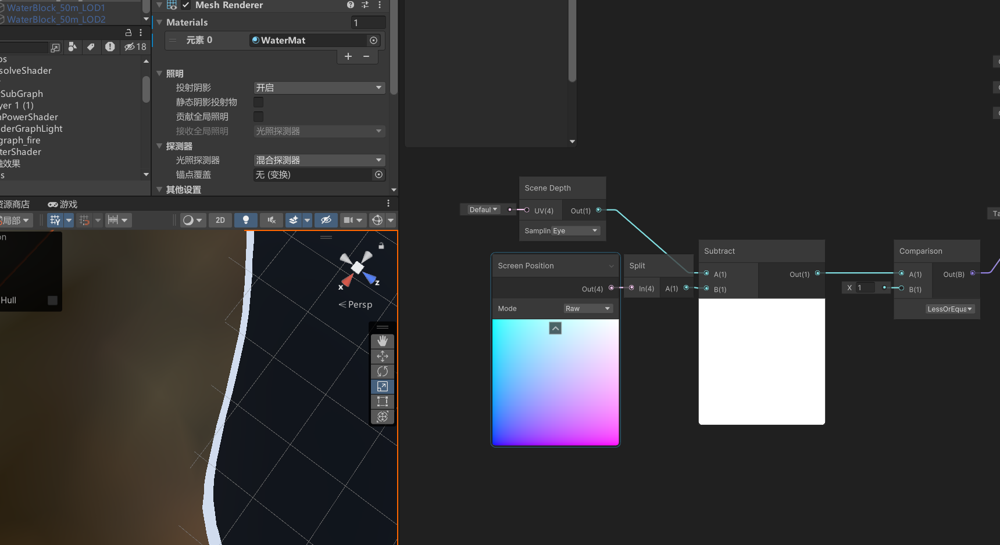

前置知识
归一化空间坐标 NDK(Normalized Device Coordinates)
在齐次裁剪空间的基础上进行透视除法或称齐次除法, 得到的坐标叫做NDC空间坐标。
透视除法-齐次除法(perspective division-homogeneous division)
就是将齐次裁剪空间坐标positionCS的X,Y,Z分量都除以W分量。
写给大家看的“透视除法” —— 齐次坐标和投影 - 简书 (jianshu.com)

算法原理
Unity Shader Graph 实现
SceneDepth
Provides access to the current Camera ‘s depth buffer using input UV , which is expected to be normalized screen coordinates.
Note: Depth buffer access requires depth buffer to be enabled on the active Render Pipeline . This process is different per Render Pipeline . It is recommended you read the documentation of your active Render Pipeline for information on enabling the depth buffer. If the depth buffer is unavailable this Node will return mid grey.
也就是说SceneDepth Node是对深度纹理进行获取的节点，只不过获取的方法不同，而深度纹理中存储的是NDC坐标的深度值。

- Linear01获取的是线性的范围为[0,1]的深度值。
想要把Raw Depth转换成线性 ，并且从近平面到远平面为0-1的深度，就需要Linear 01 Depth，这时0.5深度就是视锥体一半的位置。
- Raw也就是深度纹理中存储的非线性，范围为[0,1]的值。
表示深度缓冲的原始数据，普通的深度缓冲使用32位的浮点数表示深度，相机近平面的深度为0，远平面的深度为1。而Unity 使用了Reversed Z，这就使得近平面深度为1，而远平面深度为0，另外，如果相机的投影矩阵不是正交矩阵，那么深度缓冲中的深度就不是线性的，举个例子就是深度0.5代表的地方并不是视锥体一半的位置。
- Eye获取的是视角空间下的线性深度值，范围为[near, far]。
Linear Eye Depth中深度为1表示沿着摄像机Z轴，距离为1个单位的地方，2就是距离两个单位的地方，以此类推。
ScreenPosition
Provides access to the mesh vertex or fragment’s Screen Position .

- ScreenPosition在Default选项下会进行齐次除法运算（即除以w分量），这里的w范围为[0,1],也就是NDC下的w分量。经过透视除法的，左下角是（0，0）右上角是（1，1）的屏幕空间
- 在Raw选项下，不会进行齐次除法运算,这里的w范围是[Near, Far],是Clip Space中的w分量。未经过透视除法的，左下角是（0，0）右上角是（1，1）的屏幕空间
- Center: 经过透视除法的，左下角是（-1，-1）右上角是（1，1）的屏幕空间
- Tiled: 经过透视除法的，分成上下均等的四块组成，每块左下角是（0，0）右上角是（1，1）的屏幕空间
在这里ScreenPosition的w分量的含义也就是ClipSpace下的w分量，范围是[Near, Far],而当xy除以w分量后，越远的顶点也就会除以越大的w分量，就会产生透视现象。
存疑之处与我的观点/证明
博主Lute Li ，认为
（Scene Depth是除开透明模型之外的深度，Screen Position是所有模型的深度，相减就是边缘）
出处从头学ShaderGraph 5-护盾材质 - 知乎 (zhihu.com)

(Vertex Shader) => Clip Space => (透视除法) => NDC => (视口变换) => Window Space => (Fragment Shader)
现象很好观察，但是不知道原理，翻遍了官方文档和网上的教程也没能得到一个足够有说服力的解释，现在可以知道 SceneDepth 的 Eye 获取的是视角空间下的线性深度值，范围为[near, far]，ScreenPosition 的 w 分量是是 Clip Space 中未经过透视除法的值，范围也是[near, far]。我们知道物体自Eye/View/Camera Space(这玩意名字真多)到Cliping Space 要经过一次透视变换，或者说透视除法，所以实际上，Screen Graph 的 w 分量也许就是 Eye Space 下到相机的距离(不是深度，所以也存储了透明物体的距离)

上图的实验一定程度上看可以证明上文的观点。
有趣的是，当我们把 Surface Type 修改为Transparent, 场景中的透明与不透明物体的交界处出现了一道淡淡的白线

我们将 Comparison 节点的输入值 B 调大，交界处出现了明显的白线


我们知道，初始输出的两个节点的取值范围都是[n,f]，所以当我们把对比节点的输入值B调到1的时候，边界就很明显了。
现在，结果已经呼之欲出了，Scene Depth 节点的 Eye 输出的是深度值，我们知道，透明物体默认不会写入深度缓冲，Screen Position 输出的是简单的距离，故而相减可以得到边界。
参考资料与引用
- unity urp 20 SceneDepth和ScreenPosition.w - 知乎 (zhihu.com)
- Shader Graph中的Scene Depth和Screen Position - 知乎 (zhihu.com)
- 2022版Unity Shader Graph教程04 水面 (上) 超简单ShaderGraph入门_哔哩哔哩_bilibili
- 一篇文章彻底弄懂齐次裁剪 - 知乎 (zhihu.com)
- 写给大家看的“透视除法” —— 齐次坐标和投影 - 简书 (jianshu.com)
- Unity Shader Graph 中深度纹理（Depth Texture）和屏幕空间坐标（Screen Position） - 知乎 (zhihu.com)
- 从头学ShaderGraph 5-护盾材质 - 知乎 (zhihu.com)
- Homogeneous Coordinates, Clip Space, and NDC | WebGPU | Carmen's Graphics Blog —- 齐次坐标、裁剪空间和 NDC |网络GPU |Carmen 的图形博客 (carmencincotti.com)